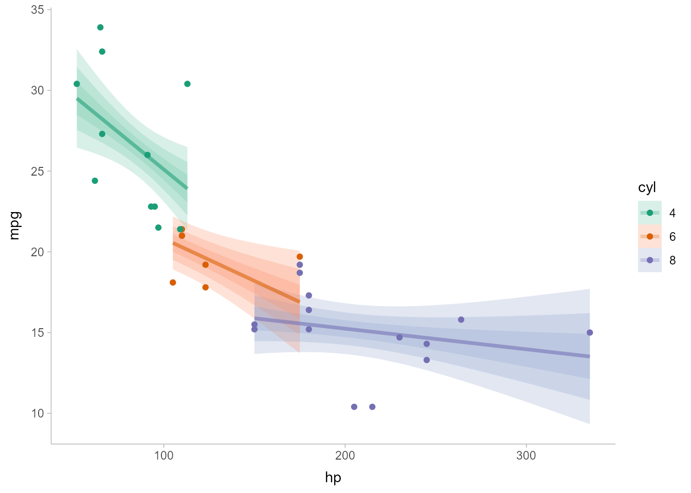

ggdist is an R package that provides a flexible set of ggplot2 geoms and stats designed especially for visualizing distributions and uncertainty. It is designed for both frequentist and Bayesian uncertainty visualization, taking the view that uncertainty visualization can be unified through the perspective of distribution visualization: for frequentist models, one visualizes confidence distributions or bootstrap distributions (see vignette("freq-uncertainty-vis")); for Bayesian models, one visualizes probability distributions (see vignette("tidybayes", package = "tidybayes")).
The geom_slabinterval() / stat_slabinterval() / stat_dist_slabinterval() family (see vignette("slabinterval")) includes point summaries and intervals, eye plots, half-eye plots, CCDF bar plots, gradient plots, dotplots, and histograms:

The geom_lineribbon() / stat_lineribbon() / stat_dist_lineribbon() family makes it easy to visualize fit lines with an arbitrary number of uncertainty bands:

All geoms in ggdist also have stat_dist_ counterparts designed for visualizing analytical distributions, which is particularly useful when visualizing uncertainty in frequentist models (see vignette("freq-uncertainty-vis")) or when visualizing priors in a Bayesian analysis.
The ggdist geoms and stats also form a core part of the tidybayes package (in fact, they originally were part of tidybayes). For examples of the use of ggdist geoms and stats for visualizing uncertainty in Bayesian models, see the vignettes in tidybayes, such as vignette("tidybayes", package = "tidybayes") or vignette("tidy-brms", package = "tidybayes").
Installation
Once on CRAN, you can install the currently-released version from CRAN with this R command:
install.packages("ggdist")
Alternatively, you can install the latest development version from GitHub with these R commands:
install.packages("devtools") devtools::install_github("mjskay/ggdist")
Feedback, issues, and contributions
I welcome feedback, suggestions, issues, and contributions! Contact me at mjskay@umich.edu. If you have found a bug, please file it here with minimal code to reproduce the issue. Pull requests should be filed against the dev branch.
Citing ggdist
Matthew Kay (2020). ggdist: Distribution and Uncertainty Visualization. R package version 2.0.3.9000, https://mjskay.github.io/ggdist/.